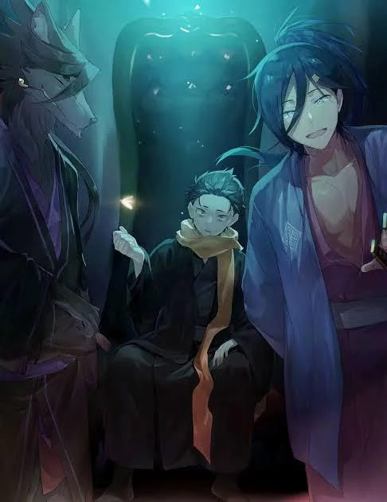
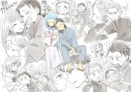
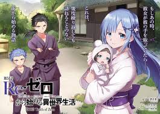
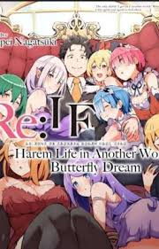
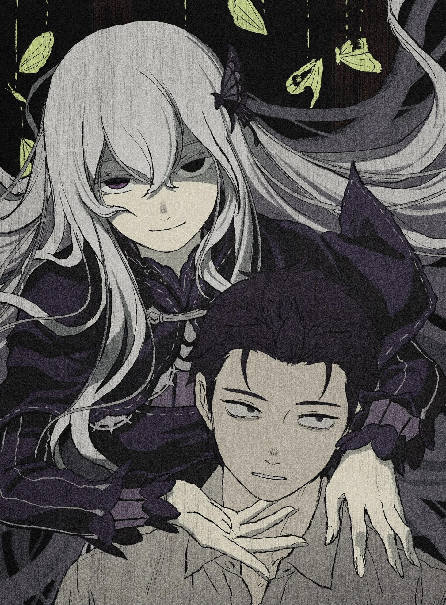
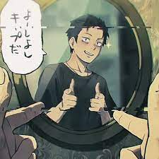
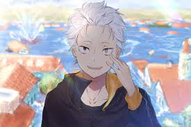
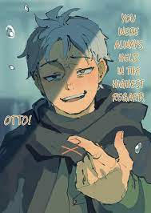

Re:Zero -- The Official IF (What-If) Routes
Credits and sources: these summaries derive from the IF/EX entries by Tappei Nagatsuki,
fan translations such as WitchCultTranslations and the Re:Zero Wiki listings.
These stories are alternate scenarios that explore what could have happened if Subaru
made different choices. They are official side stories, but not part of the main canon timeline.
What these IF routes are
Re:Zero IF or EX routes are special one-shot stories released by Tappei Nagatsuki,
often published on April Fools or as bonus materials. Each story diverges from the main
plot at a specific moment, exploring the results of a different choice Subaru could have made.
They are darker or more experimental in tone, and each route loosely reflects one of the
Seven Deadly Sins. These stories are not canon to the main plot, but they provide insight
into Subaru's psyche and the consequences of extreme decisions.
Ayamatsu - Pride IF
Overview (Spoiler-Free)
Ayamatsu(アヤマツ／過つ ), widely known as the Pride IF, diverges early in Arc 1. Here Subaru refuses
to call for help when first attacked by thugs, driven by pride and stubbornness.
This single difference shapes a path of isolation, cruelty, and inner collapse.
The story becomes a mirror of what happens when pride replaces humility.
Spoilers - What actually happens in Ayamatsu
The route begins when Subaru refuses to cry out for help during his first alley encounter.
By doing so, he breaks the chain that would have introduced Reinhard, removing a powerful ally.
Subaru endures repeated brutal deaths, far harsher than the canon loops, and each revival
drains his resolve. He begins scratching death tallies on the ground, wiping them away in
frustration, realizing he cannot maintain the fantasy of being a destined hero.
His pride grows into a warped armor. He avoids seeking aid from Beatrice, Roswaal,
or the mansion residents because doing so would mean admitting weakness. This causes
the relationships meant to save him to crumble instead. The loops twist Subaru's emotions
until he breaks psychologically, developing a fixation on survival without relying on others.
Eventually he falls into the influence of the Witch Cult and accepts the role of Sin Archbishop
of Pride. He allies with Elsa, Meili, and other dangerous individuals. Subaru no longer tries
to protect Emilia from the cult; instead he strives to elevate her through force, seeing her
as proof of his worth rather than someone he genuinely wishes to help.
Subaru declares himself as the Archbishop of Pride, embracing a distorted identity.
He leads cult operations, using violence and fear to assert superiority. Conflicts escalate
into rebellions, massacres, and shattered alliances. Subaru loses the trust of those who
would have been closest to him, all because his pride prevents him from admitting fault.
The story ends with Subaru achieving superficial victory but at the cost of his humanity.
His pride isolates him completely. Ayamatsu stands as a warning about the self-destruction
born from refusing help, refusing humility, and refusing vulnerability.


Oboreru - Wrath IF
Overview (Spoiler-Free)
Oboreru(オボレル／溺れる ), the Wrath IF, explores what would happen if Subaru let rage and pain control
his decisions. Instead of patience and empathy guiding him, he gives in to fury,
leading to a violent, tragic spiral where protection becomes domination.
Spoilers - What actually happens in Oboreru
This route diverges in Arc 2 when Subaru accepts Beatrice's teleportation out of anger
and desperation. By doing so prematurely, he loses the chance to bond with Rem and Ram.
Trust between them shatters, and the sisterly bond that canon strengthens becomes unstable.
Subaru acts on rage rather than strategy, aligning himself with violent factions and
building a reputation as a merciless executioner. Rumors call him the Purge King,
a man who brings destruction rather than protection. His anger fuels each loop as he
dies repeatedly, returning more unhinged each time.
Instead of protecting the mansion residents, Subaru begins hunting Witch Cult members
and even innocent bystanders if they obstruct his vengeance. His return cycles stop
being tools of growth and become a means for escalation. He seeks death intentionally
to retry until every enemy is eliminated.
Subaru launches assaults on cult hideouts using brutality the canonical Subaru would
never consider. Torture, betrayal, and scorched earth tactics become normalized for him.
Former allies like Beatrice, Reinhard, or Garfiel fall in these loops due to Subaru's
reckless decisions or direct confrontations.
A heartbreaking moment shows Ram confronting Subaru after Rem's death in this path.
Instead of apologizing or grieving, Subaru threatens her in response, showing how far
he has descended. His protective instinct mutates into obsession and domination.
The climax involves Subaru leading an enormous campaign of extermination through Witch
Cult territories. Although he wins battles, he becomes alienated from everyone he once
cared about. The story ends in a hollow victory; though Subaru stands among the ashes of
his enemies, he has nothing left worth protecting.
Oboreru presents the tragedy of wrath when unchecked--how righteous fury becomes cruelty,
and how a hero becomes a tyrant in the name of love.

Rem IF - Sloth IF
Overview (Spoiler-Free)
The Sloth(レム ) IF imagines a world where Subaru simply gives up fighting for the kingdom
and accepts Rem's offer to run away together. Instead of confronting danger and growth,
Subaru chooses peace through escape. It is the calmest and least grim of the IFs.
Spoilers - What actually happens in Rem IF
After the events of Arc 3, Subaru accepts Rem's plea to leave Lugunica and forget the
Royal Selection. They relocate to Kararagi and build a quiet life. They marry, raise
children, manage a small home, and spend days in peaceful routine. Subaru finds work,
loses the urgency created by his Return by Death trauma, and becomes a father devoted
to family rather than fate.
The IF is short and gentle. However, its implications are bittersweet. Subaru finds
happiness, but only by abandoning Emilia, the kingdom, and everyone relying on him.
This route shows that although Subaru can find fulfillment, it comes at a painful cost
to the world he leaves behind. It asks whether peace achieved through surrender is
truly peace at all.


The Butterfly Dream - Lust IF
Overview (Spoiler-Free)
The Butterfly Dream IF(こちょうのゆめ ) is a playful, dreamlike April Fools story in which Subaru
enjoys romantic freedom and indulgence without responsibility. It is comedic and
surreal, focusing on fantasy rather than serious divergence.
Spoilers - What actually happens in The Butterfly Dream
Subaru dreams of living in a luxurious mansion surrounded by multiple lovers,
including Emilia, Rem, Crusch, Anastasia, Felt, and even Petra. The world has no
conflict, no Witch Cult, and no burdens. Subaru spends his time flirting, resting,
and enjoying affection that would never realistically occur.
The surviving text is incomplete because Tappei edited the post shortly after
publishing it. However, the preserved sections depict a harem fantasy intended for
humor, not drama. Tea parties, affection, jealousy jokes, and comforting scenes fill
the dream.
In the ending, the illusion dissolves. Subaru wakes and reflects on how such perfect
happiness can only exist in dreams. The story concludes quietly, reinforcing that the
fantasy is enjoyable but fleeting, and not a real solution to his struggles.

Kasaneru - Greed IF
Overview (Spoiler-Free)
Kasaneru(カサネル ) is the Greed route and one of the darkest IFs. In this path Subaru accepts
Echidna's contract during Arc 4, gaining limitless knowledge but losing empathy,
identity, and emotional sanity through countless loops.
Spoilers - What actually happens in Kasaneru
Subaru accepts Echidna's offer and becomes bound to her guidance. With access to
her knowledge, he begins looping endlessly to create a perfect outcome. Over millions
of deaths, he transforms from a compassionate boy into a strategist who treats lives
as replaceable calculations.
His emotions erode as he optimizes each loop. He manipulates allies like Emilia,
Beatrice, and the villagers, seeing them not as friends but variables to be adjusted.
He sacrifices people to minimize casualties elsewhere, believing that ends justify
methods.
Subaru becomes obsessed with perfection and begins measuring progress in loop counts.
When he reaches a point where even thousands of loops cannot save everyone, he breaks
further, meeting a hollow version of himself within the loops. Echidna watches as he
descends, acknowledging that his greed is not for wealth but for saving everyone all
at once.
The climax sacrifices a major character to reduce the loop burden, revealing how far
Subaru has fallen. The ending leaves Subaru victorious in strategy but empty in heart.
He has saved people, but not as the boy they once loved. Kasaneru warns that unlimited
knowledge without emotional grounding destroys identity.


Tsugihagu - Gluttony IF
Overview (Spoiler-Free)
Tsugihagu(ツギハグ ) is the Gluttony IF and one of the most disturbing stories. Subaru loses
his identity and tries to rebuild it by consuming others' Books of the Dead, blurring
the line between memory, soul, and self.
Spoilers - What actually happens in Tsugihagu
After reading Reid Astrea's Book of the Dead, Subaru experiences a mental breakdown.
He becomes convinced that his memories are incomplete or false. In desperation, he
begins hunting for other Books of the Dead to piece himself together. This includes
books of friends, allies, and eventually victims he kills himself.
Each book gives him fragments that do not belong to him. He feels emotions that come
from other people, memories that contradict his own, and sensations that warp his
sense of self. Subaru asks whether he is the original Subaru or a collage of stolen
experiences.
He eventually kills those who know him so he can consume their books and fill the
gaps. Emilia, Rem, and Beatrice sense his shift but cannot bring him back. Subaru
becomes a creature driven not by malice but by hunger for identity. In the end he
realizes the more memories he steals, the less his original sense of self remains.
The route concludes with Subaru's identity dissolving into a patchwork of others'
lives, leaving the question of whether any true Subaru remains at all.


Envy IF Route (Main Canon Path)
This final section describes the canonical route of the Re:Zero story, often considered
the Envy route in fan interpretation. Here Subaru struggles with feelings of inferiority,
comparison, and longing for the power and confidence others possess. His journey centers
on overcoming self hatred, building genuine connections, and learning to accept himself
as he grows. This is the route followed in the novels and anime, from Arc 1 onward.